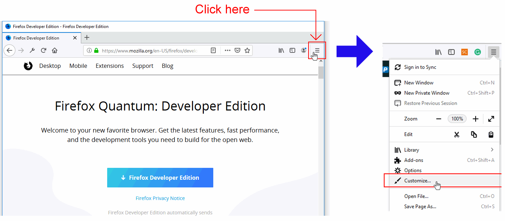
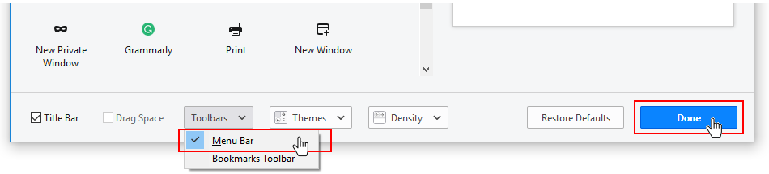
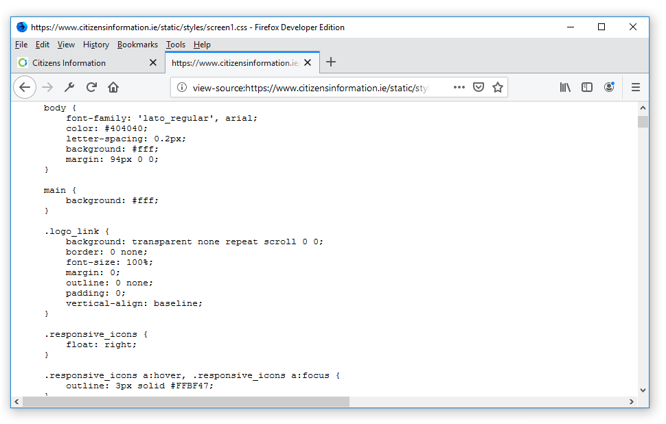

Learning Goals
At the end of this Tutorial you will be able to:
- Download and install three web browsers: Google Chrome, Brave and Mozilla Firefox Developer Edition.
- Display the Menu Bar in Mozilla Firefox Developer Edition.
- View a web page's image, background image, and video files.
- View a web page's source HTML, CSS and JavaScript files.
- Display, position (‘dock’), and enlarge the DevTools window in a web browser.
About web browsers
A web browser is a software program or app that gives you access to web pages and services on the Internet. With a web browser, you can display text, images and animations, watch videos, listen to audio podcasts and music, exchange emails, and purchase products and services.
In Europe, as of January 2021, the most widely-used web browsers across all devices (desktop, laptop, tablets and mobiles) were as follows:
Google Chrome: 60.42% |
Microsoft Edge: 4.38% |
Apple Safari: 19.86% |
Samsung Internet: 3.92% |
Mozilla Firefox: 6.18% |
Opera: 2.49% |
Default web browsers
Your laptop or desktop computer comes with a default web browser pre-installed:
- Microsoft Edge: This web browser is included with the Microsoft Windows 10 operating system. Since 2016, Microsoft has recommended using Edge as a replacement for the earlier and flawed Internet Explorer browser.
- Safari: This web browser is included in the iOS operating system used on Apple computers, tablets and mobile phones.
In these Tutorials, you will instead use three web browsers most popular with web designers and developers: Google Chrome, Brave and Mozilla Firefox Developer Edition.
Installing Google Chrome
Google Chrome is the world’s most popular web browser, in part because it is installed by default on most Android-based mobile phones. Follow these steps to download and install Google Chrome on your computer.
- Use your web browser to go to this web address: https://www.google.com/chrome
- Click the button named Download Chrome.

- Accept the Google Chrome Terms of Service by clicking the Accept and Install button.

- Follow the usual download and installation instructions for your computer.
The Google Chrome web browser will install and then open on your computer.
Installing Brave
The Firefox Developer Edition is a version of the Firefox web browser from Mozilla that is tailored for web designers and developers. You can install and use both this and the regular version of Firefox on the same computer.
Follow these steps to download and install Mozilla Firefox Developer Edition.
- Use your web browser to go to this web address: https://brave.com
- Click the button named Firefox Developer Edition
 Firefox will begin downloading the appropriate version for your computer and operating system.
Firefox will begin downloading the appropriate version for your computer and operating system. - Follow the usual download and installation instructions for your computer.

The Firefox Developer Edition web browser will install and then open on your computer.
Installing Mozilla Firefox Developer Edition
The Firefox Developer Edition is a version of the Firefox web browser from Mozilla that is tailored for web designers and developers. You can install and use both this and the regular version of Firefox on the same computer.
Follow these steps to download and install Mozilla Firefox Developer Edition.
- Use your web browser to go to this web address: https://www.mozilla.org/en-US/firefox/developer/
- Click the button named Firefox Developer Edition
Firefox will begin downloading the appropriate version for your computer and operating system.
- Follow the usual download and installation instructions for your computer.
The Firefox Developer Edition web browser will install and then open on your computer.
Displaying the Menu Bar in Firefox
You will find it easier to use Firebox Developer Edition if you display the Menu Bar that is hidden by default. Here are the steps:
- At the top-right of the Firefox screen, click the hamburger (three lines) icon to display a dropdown menu of options. 
- From this menu, choose the Customize command.
- Along the bottom of the next screen, you can see a number of options. One is a dropdown list named Toolbars.  Click on Toolbars and then click the Menu Bar option to select it.
- When finished, click the Done button at the bottom-right of the screen.
You can now see that the Menu Bar, with its various menus of commands, is visible at the top of the Firefox screen.

As a web designer and developer, the Menu Bar options you will use most frequently will be those available with the Tools | Web Developer command.

Viewing HTML, CSS and JavaScript source files
You can use a web browser to display the underlying HTML and CSS code for a web page. Here is an example:
- Use your web browser to go to this web address: https://www.citizensinformation.ie
- Right-click anywhere on the web page. From the pop-up menu displayed, choose the View Page Source command
 You can now see the HTML code of the web page in a new tab of your web browser.
You can now see the HTML code of the web page in a new tab of your web browser.

- Web pages are typically linked to one or more stylesheet files that control their visual appearance – such as the position of various elements, their fonts and colours.
Stylesheet files are included near the top of the HTML code in the <head> section, and their file names end in .css. You will also see that they are shown as clickable hyperlinks.
In this example, you can see two stylesheet files, named print1.css and screen1.css.

- Click on the second stylesheet, screen1.css  You can now see the content of the stylesheet.
About web browser DevTools
Developer Tools – commonly known as DevTools – are tools built into web browsers that enable designers and developers to view and edit the properties of any displayed web page. Typically you will use DevTools to:
- Locate problems with a web page – for example, a missing image or font, or some page element incorrectly positioned
- Quickly experiment with some change of style or content. For example, you could alter the size and colour of text, or hide a particular element of a web page from displaying.

DevTools appear in a window typically located at the bottom or right of your web browser. You can position or ‘dock‘ the DevTools at whatever screen location you wish. Two points to note about DevTools.
- Different web browsers offer different sets of tools you to work with. But there are many similarities. So, if you can use DevTools in Google Chrome, for example, you will have little difficulty in using the Firefox DevTools.
- DevTools are being continually updated with new features, as makers of web browsers compete to offer web developers and designers the most useful and convenient features.
In web browsers, there are three ways to display DevTools: the F12 key, the Inspect Element command, and via an icon at the top-right of the web browser window.
DevTools: the F12 key
The quickest, simplest way to display DevTools in any web browser is to press the F12 key. Pressing the same key a second time will hide the DevTools window.
DevTools: the Inspect Element command
If you are focused on a particular element of a web page, such as an image, a heading or other block of text, you can:
- For an image, right-click on it. For text, drag with the mouse across the text to select it, and then right-click with the mouse.
- You are now shown a pop-up menu that includes a command named Inspect (Chrome) or Inspect Element (Firefox).
- Click the command.

The DevTools window is now displayed with the properties of the selected web page element highlighted.
DevTools: the dropdown menu
At the top-right of the web browser window in Chrome or Firefox is an icon that, if clicked, gives you access to various additional features such as DevTools.
In Google Chrome, follow these steps:
- At the top-right of the web browser window, click the vertical ellipses (three dots) icon.
- From the dropdown menu now displayed, click the More tools command.
- From the sub-menu now displayed, click the Developer tools command.
In Mozilla Firefox, follow these steps:
- At the top-right of the web browser window, click the hamburger (three lines) icon.
- From the dropdown menu now displayed, click the Developer Tools command near the bottom.
- From the sub-menu now displayed, click the Toggle Tools command.
Mozilla Firefox now displays its DevTools window. Another option in Firefox is to choose the Tools | Web Developer | Toggle Tools command from the Menu Bar at the top of the web browser window.
Positioning (docking) the DevTools window
Web browsers allow you to position (‘dock’) the DevTools window at various locations within the main web browser window. You can change the DevTools docking location at any stage.
In Google Chrome, follow these steps:
- At the top-right of the DevTools window, click the vertical ellipses (three dots) icon.
- Choose your required location for the DevTools window from the list of docking options displayed.

In Mozilla Firefox, follow these steps:
- At the top-right of the DevTools window, click the horizontal ellipses (three dots) icon.
- Choose your required location for the DevTools window from the list of docking options displayed.

Return to Contents.